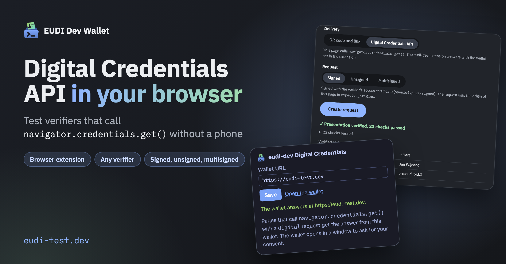

navigator.credentials.get() with this wallet. You approve the presentation in a wallet window, without a phone.Install from the Chrome Web Store
For other ways to install it, open How to use and choose Browser extension. Details are in the extension documentation. Please report problems on GitHub.